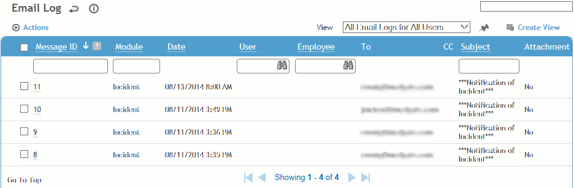
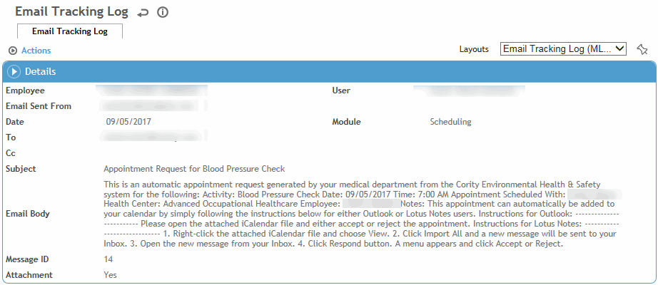

Every email successfully sent by the Cority system is stored in the email log, viewable by any user with administrator privileges. The log does not include failed emails.

In the Administrator menu, click Email Log.
Click a link to view details of a message.
To resend a message, select the message and choose Actions»Resend Email.
To view an attachment, select the message and choose Actions»Open Attachment.

Individual users can view their own email log from their My Favorites menu; see Viewing Cority Email Messages.
The Email Tracking Log can be specified as an entity when creating reports; see Editing or Creating an Ad Hoc Report.